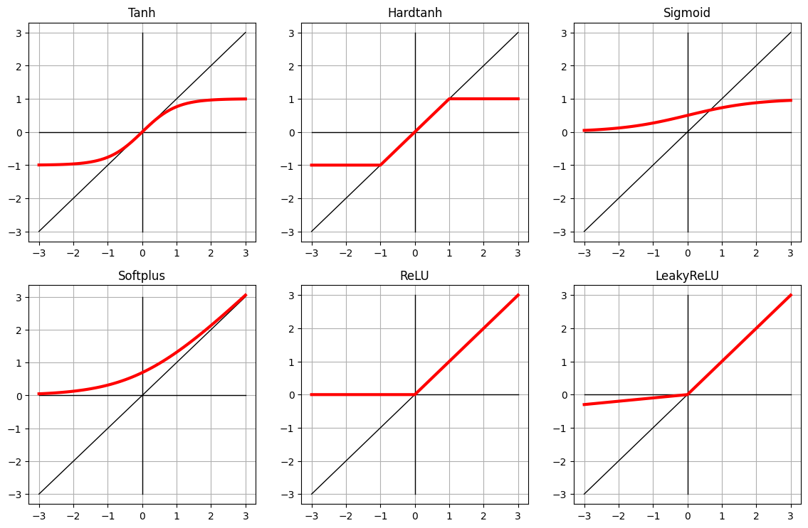
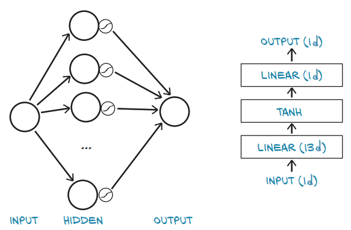
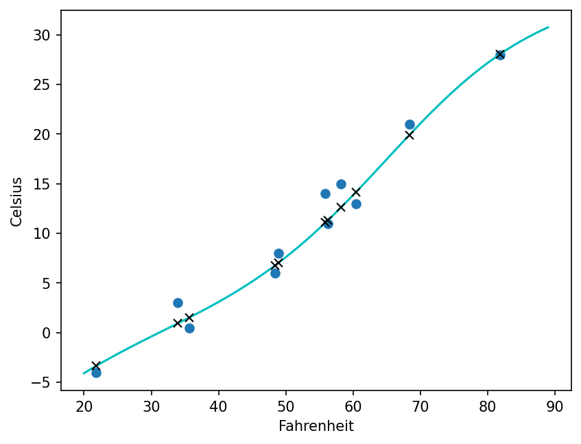

%matplotlib inline
import numpy as np
import torch
import torch.optim as optim
torch.set_printoptions(edgeitems=2, linewidth=75)6장. 신경망을 활용한 데이터 적합
지난 학습
- 5장에서는 단순한 선형 모델을 직접 구현했을 때 어떤 구조로 학습이 이뤄지는지 직접 눈으로 확인
- 5장에서 다룬 예제는 매우 단순한 데이터의 형태이기 때문에 직접 선형 변환을 해도 문제가 없었음
- 훨씬 많은 양의 데이터와 다차원 형태를 가진 데이터의 경우 어떠한 모델을 쓰는지 알아보자
6장에서 다룰 내용
- 선형 모델과 비교하여 비선형 활성 함수의 차이점
- 파이토치의 nn모듈 다루기
- 신경망을 활용한 선형 적합 문제 만들기
6.1 인공신경망

n_samples = t_u.shape[0]
n_val = int(0.2 * n_samples)
n_samples,n_val(11, 2)n_samples = t_u.shape[0] # 11
n_val = int(0.2 * n_samples) # 2
shuffled_indices = torch.randperm(n_samples)
train_indices = shuffled_indices[:-n_val]
val_indices = shuffled_indices[-n_val:]
shuffled_indices,train_indices, val_indices(tensor([ 0, 3, 9, 6, 4, 8, 7, 10, 5, 1, 2]),
tensor([ 0, 3, 9, 6, 4, 8, 7, 10, 5]),
tensor([1, 2]))shuffled_indices[2]tensor(1)# 훈련과 평가 자료 구분
t_u_train = t_u[train_indices]
t_c_train = t_c[train_indices]
t_u_val = t_u[val_indices]
t_c_val = t_c[val_indices]
t_un_train = 0.1 * t_u_train
t_un_val = 0.1 * t_u_val
t_un_train, t_un_val, t_c_val(tensor([[3.5700],
[8.1900],
[6.0400],
[3.3900],
[5.6300],
[4.8400],
[2.1800],
[6.8400],
[4.8900]]),
tensor([[5.5900],
[5.8200]]),
tensor([[14.],
[15.]]))import torch.nn as nn
linear_model = nn.Linear(1, 1)
linear_model(t_un_val)tensor([[-0.8954],
[-1.2434]], grad_fn=<AddmmBackward0>)활성 함수
%matplotlib inline
import numpy as np
import matplotlib.pyplot as plt
import torch
import torch.optim as optim
import torch.nn as nn
torch.set_printoptions(edgeitems=2, linewidth=75)input_t = torch.arange(-3, 3.1, 0.1)
input_ttensor([-3.0000e+00, -2.9000e+00, -2.8000e+00, -2.7000e+00, -2.6000e+00,
-2.5000e+00, -2.4000e+00, -2.3000e+00, -2.2000e+00, -2.1000e+00,
-2.0000e+00, -1.9000e+00, -1.8000e+00, -1.7000e+00, -1.6000e+00,
-1.5000e+00, -1.4000e+00, -1.3000e+00, -1.2000e+00, -1.1000e+00,
-1.0000e+00, -9.0000e-01, -8.0000e-01, -7.0000e-01, -6.0000e-01,
-5.0000e-01, -4.0000e-01, -3.0000e-01, -2.0000e-01, -1.0000e-01,
-2.3842e-08, 1.0000e-01, 2.0000e-01, 3.0000e-01, 4.0000e-01,
5.0000e-01, 6.0000e-01, 7.0000e-01, 8.0000e-01, 9.0000e-01,
1.0000e+00, 1.1000e+00, 1.2000e+00, 1.3000e+00, 1.4000e+00,
1.5000e+00, 1.6000e+00, 1.7000e+00, 1.8000e+00, 1.9000e+00,
2.0000e+00, 2.1000e+00, 2.2000e+00, 2.3000e+00, 2.4000e+00,
2.5000e+00, 2.6000e+00, 2.7000e+00, 2.8000e+00, 2.9000e+00,
3.0000e+00])activation_list = [
nn.Tanh(),
nn.Hardtanh(),
nn.Sigmoid(),
nn.Softplus(),
nn.ReLU(),
nn.LeakyReLU(negative_slope=0.1),
#nn.Tanhshrink(),
#nn.Softshrink(),
#nn.Hardshrink(),
]
fig = plt.figure(figsize=(14, 28), dpi=100)
for i, activation_func in enumerate(activation_list):
subplot = fig.add_subplot(len(activation_list), 3, i+1)
subplot.set_title(type(activation_func).__name__)
output_t = activation_func(input_t)
plt.grid()
plt.plot(input_t.numpy(), input_t.numpy(),'k', linewidth=1)
plt.plot([-3,3], [0,0], 'k', linewidth=1)
plt.plot([0,0], [-3,3], 'k', linewidth=1)
plt.plot(input_t.numpy(), output_t.numpy(), 'r', linewidth=3)
output_ttensor([-3.0000e-01, -2.9000e-01, -2.8000e-01, -2.7000e-01, -2.6000e-01,
-2.5000e-01, -2.4000e-01, -2.3000e-01, -2.2000e-01, -2.1000e-01,
-2.0000e-01, -1.9000e-01, -1.8000e-01, -1.7000e-01, -1.6000e-01,
-1.5000e-01, -1.4000e-01, -1.3000e-01, -1.2000e-01, -1.1000e-01,
-1.0000e-01, -9.0000e-02, -8.0000e-02, -7.0000e-02, -6.0000e-02,
-5.0000e-02, -4.0000e-02, -3.0000e-02, -2.0000e-02, -1.0000e-02,
-2.3842e-09, 1.0000e-01, 2.0000e-01, 3.0000e-01, 4.0000e-01,
5.0000e-01, 6.0000e-01, 7.0000e-01, 8.0000e-01, 9.0000e-01,
1.0000e+00, 1.1000e+00, 1.2000e+00, 1.3000e+00, 1.4000e+00,
1.5000e+00, 1.6000e+00, 1.7000e+00, 1.8000e+00, 1.9000e+00,
2.0000e+00, 2.1000e+00, 2.2000e+00, 2.3000e+00, 2.4000e+00,
2.5000e+00, 2.6000e+00, 2.7000e+00, 2.8000e+00, 2.9000e+00,
3.0000e+00])

드디어 신경망
# 서브모듈 이름 붙이기
from collections import OrderedDict
seq_model = nn.Sequential(OrderedDict([
('hidden_linear', nn.Linear(1, 13)),
('hidden_activation', nn.Tanh()),
('output_linear', nn.Linear(13 , 1))
]))
seq_modelSequential(
(hidden_linear): Linear(in_features=1, out_features=13, bias=True)
(hidden_activation): Tanh()
(output_linear): Linear(in_features=13, out_features=1, bias=True)
)for name, param in seq_model.named_parameters():
print(name,param.shape)hidden_linear.weight torch.Size([13, 1])
hidden_linear.bias torch.Size([13])
output_linear.weight torch.Size([1, 13])
output_linear.bias torch.Size([1])# 처음에는 아무 미분 값도 없다
seq_model.hidden_linear.weight, seq_model.hidden_linear.weight.grad(Parameter containing:
tensor([[ 0.7718],
[ 0.4013],
[-0.8777],
[ 0.9643],
[ 0.0868],
[-0.6408],
[ 0.9195],
[ 0.2502],
[ 0.4220],
[ 0.4276],
[ 0.6409],
[-0.9959],
[ 0.6283]], requires_grad=True),
None)def training_loop(n_epochs, optimizer, model, loss_fn, t_u_train, t_u_val,
t_c_train, t_c_val):
for epoch in range(1, n_epochs + 1):
t_p_train = model(t_u_train)
loss_train = loss_fn(t_p_train, t_c_train)
t_p_val = model(t_u_val)
loss_val = loss_fn(t_p_val, t_c_val)
optimizer.zero_grad() # 기울기 값이 이전 반복문 수행 시 계산 되었던 기존값에 누적되어 값이 틀려지기 때문에 초기화
loss_train.backward() # 미분 계산
optimizer.step() # 파라미터들이 알아서 조정
if epoch == 1 or epoch % 1000 == 0:
print(f"Epoch {epoch}, Training loss {loss_train.item():.4f},"
f" Validation loss {loss_val.item():.4f}")# 경사 하강법 옵티마이저 사용
optimizer = optim.SGD(seq_model.parameters(), lr=1e-3)
training_loop(
n_epochs = 5000,
optimizer = optimizer,
model = seq_model,
loss_fn = nn.MSELoss(),
t_u_train = t_un_train,
t_u_val = t_un_val,
t_c_train = t_c_train,
t_c_val = t_c_val)
print('output', seq_model(t_un_val))
print('answer', t_c_val)
print('hidden', seq_model.hidden_linear.weight.grad)Epoch 1, Training loss 0.9252, Validation loss 8.4811
Epoch 1000, Training loss 0.9166, Validation loss 8.5720
Epoch 2000, Training loss 0.9093, Validation loss 8.6558
Epoch 3000, Training loss 0.9031, Validation loss 8.7332
Epoch 4000, Training loss 0.8976, Validation loss 8.8042
Epoch 5000, Training loss 0.8928, Validation loss 8.8698
hidden tensor([[ 0.0019],
[-0.0035],
[-0.0091],
[ 0.0072],
[-0.0047],
[ 0.0074],
[-0.0050],
[-0.0037],
[-0.0045],
[-0.0061],
[-0.0039],
[ 0.0040],
[-0.0031]])from matplotlib import pyplot as plt
t_range = torch.arange(20., 90.).unsqueeze(1)
fig = plt.figure(dpi=150)
plt.xlabel("Fahrenheit")
plt.ylabel("Celsius")
plt.plot(t_u.numpy(), t_c.numpy(), 'o')
plt.plot(t_range.numpy(), seq_model(0.1 * t_range).detach().numpy(), 'c-')
plt.plot(t_u.numpy(), seq_model(0.1 * t_u).detach().numpy(), 'kx')
list(linear_model.parameters())[Parameter containing:
tensor([[5.3076]], requires_grad=True),
Parameter containing:
tensor([-17.2596], requires_grad=True)]from matplotlib import pyplot as plt
t_range = torch.arange(20., 90.).unsqueeze(1)
fig = plt.figure(dpi=150)
plt.xlabel("Fahrenheit")
plt.ylabel("Celsius")
plt.plot(t_u.numpy(), t_c.numpy(), 'o')
plt.plot(t_range.numpy(), seq_model(0.1 * t_range).detach().numpy(), 'c-')
plt.plot(t_range.numpy(), linear_model(0.1 * t_range).detach().numpy())
plt.plot(t_u.numpy(), seq_model(0.1 * t_u).detach().numpy(), 'kx')
linear_model = nn.Linear(1, 1)
optimizer = optim.SGD(linear_model.parameters(), lr=1e-2)
training_loop(
n_epochs = 3000,
optimizer = optimizer,
model = linear_model,
loss_fn = nn.MSELoss(),
t_u_train = t_un_train,
t_u_val = t_un_val,
t_c_train = t_c_train,
t_c_val = t_c_val)
print()
print(linear_model.weight)
print(linear_model.bias)Epoch 1, Training loss 289.4889, Validation loss 343.0251
tensor([[-170.2993]])
Epoch 1000, Training loss 3.7504, Validation loss 2.2598
tensor([[-0.0843]])
Epoch 2000, Training loss 3.1957, Validation loss 2.2075
tensor([[-0.0106]])
Epoch 3000, Training loss 3.1870, Validation loss 2.2013
tensor([[-0.0013]])
Parameter containing:
tensor([[5.3074]], requires_grad=True)
Parameter containing:
tensor([-17.2584], requires_grad=True)